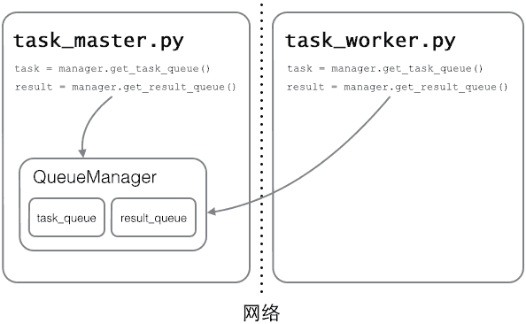
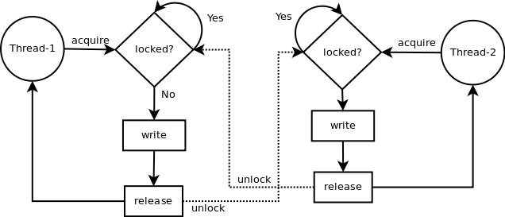
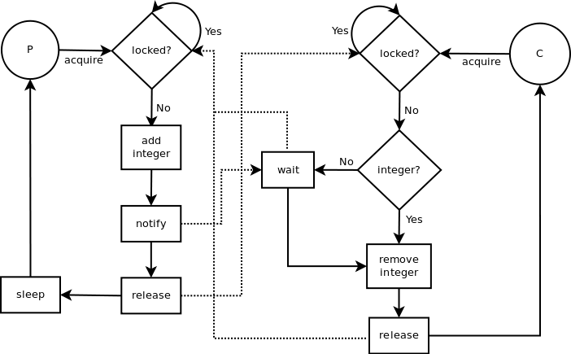
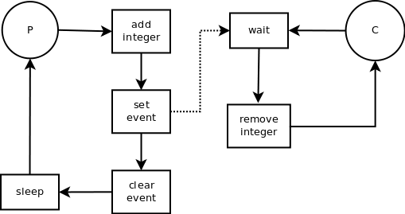
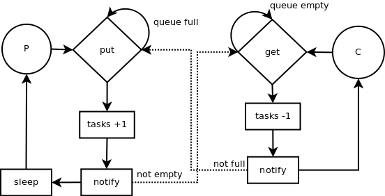

进程与线程#
进程#
进程是一种古老而典型的上下文系统，每个进程有独立的地址空间，资源句柄，他们互相之间不发生干扰。
每个进程在内核中会有一个数据结构进行描述，我们称其为进程描述符。这些描述符包含了系统管理进程所需的信息，并且放在一个叫做任务队列的队列里面。当新建进程时，我们需要分配新的进程描述符，并且分配新的地址空间(和父地址空间的映射保持一致，但是两者同时进入COW状态)。这些过程需要一定的开销。
操作系统中最核心的概念是进程，分布式系统中最重要的问题是进程间通信。
进程是“程序执行的一个实例”，担当分配系统资源的实体。进程创建必须分配一个完整的独立地址空间。
进程切换只发生在内核态，两步：
- 切换页全局目录以安装一个新的地址空间；
- 切换内核态堆栈和硬件上下文。
进程状态#
忽略去linux内核复杂的状态转移表，我们实际上可以把进程状态归结为三个最主要的状态：就绪态，运行态，睡眠态。这就是任何一本系统书上都有的三态转换图。
就绪和执行可以互相转换，基本这就是调度的过程。而当执行态程序需要等待某些条件(最典型就是IO)时，就会陷入睡眠态。而条件达成后，一般会自动进入就绪。
上下文#
指的是程序在执行中的一个状态。通常我们会用调用栈来表示这个状态——栈记载了每个调用层级执行到哪里，还有执行时的环境情况等所有有关的信息
阻塞#
当进程需要在某个文件句柄上做IO，这个fd又没有数据给他的时候，就会发生阻塞。具体来说，就是记录XX进程阻塞在了XX fd上，然后将进程标记为睡眠态，并调度出去。当fd上有数据时(例如对端发送的数据到达)，就会唤醒阻塞在fd上的进程。进程会随后进入就绪队列，等待合适的时间被调度。
阻塞后的唤醒也是一个很有意思的话题。当多个上下文阻塞在一个fd上(虽然不多见，但是后面可以看到一个例子)，而且fd就绪时，应该唤醒多少个上下文呢？传统上应当唤醒所有上下文，因为如果仅唤醒一个，而这个上下文又不能消费所有数据时，就会使得其他上下文处于无谓的死锁中。
但是有个著名的例子——accept，也是使用读就绪来表示收到的。如果试图用多个线程来accept会发生什么？当有新连接时，所有上下文都会就绪，但是只有第一个可以实际获得fd，其他的被调度后又立刻阻塞。这就是惊群问题thundering herd problem。
现代linux内核已经解决了这个问题，方法惊人的简单——accept方法加锁。
并发和并行#
在这里在多讲一些,并发和并行是得从物理硬件方面来考虑.在以前电脑是单核的时候,一个cup核心只能进行单个任务,将单个cup运行时间分配给多个任务运行,这就是并发,让你看起来像是多个任务同时执行,本质上还是一个任务一个任务的执行.
而并行,是在多核cup电脑上,为每一个cup核心分配一个任务,是真正的多任务执行.
同步,异步,回调#
同步同步呢.就是程序一个语句一个语句顺序执行,很符合人得思维,是线性执行.异步异步的特性就是执行起来不会阻塞回调回调是在等待某一件事情完成之后,在运行一个回调函数
python进程#
multiprocessing#
from multiprocessing import Process import os # 子进程要执行的代码 def run_proc(name): print('Run child process %s (%s)...' % (name, os.getpid())) if __name__=='__main__': print('Parent process %s.' % os.getpid()) p = Process(target=run_proc, args=('test',)) print('Child process will start.') p.start() p.join() print('Child process end.') ''' Parent process 928. Process will start. Run child process test (929)... Process end. '''
进程池(Pool)#
from multiprocessing import Pool import os, time, random def long_time_task(name): print('Run task %s (%s)...' % (name, os.getpid())) start = time.time() time.sleep(random.random() * 3) end = time.time() print('Task %s runs %0.2f seconds.' % (name, (end - start))) if __name__=='__main__': print('Parent process %s.' % os.getpid()) p = Pool(4) for i in range(5): p.apply_async(long_time_task, args=(i,)) print('Waiting for all subprocesses done...') p.close() p.join() print('All subprocesses done.') ''' Parent process 669. Waiting for all subprocesses done... Run task 0 (671)... Run task 1 (672)... Run task 2 (673)... Run task 3 (674)... Task 2 runs 0.14 seconds. Run task 4 (673)... Task 1 runs 0.27 seconds. Task 3 runs 0.86 seconds. Task 0 runs 1.41 seconds. Task 4 runs 1.91 seconds. All subprocesses done. '''
子进程 subprocess#
我们都是在创建并运行一个进程。像Linux进程那样，一个进程可以fork一个子进程，并让这个子进程exec另外一个程序。在Python中，我们通过标准库中的subprocess包来fork一个子进程，并运行一个外部的程序
os.fork也可以在Python程序中轻松创建子进程
import subprocess print('$ nslookup www.python.org') r = subprocess.call(['nslookup', 'www.python.org']) print('Exit code:', r)
进程间通信#
Queue
from multiprocessing import Process, Queue import os, time, random # 写数据进程执行的代码: def write(q): print('Process to write: %s' % os.getpid()) for value in ['A', 'B', 'C']: print('Put %s to queue...' % value) q.put(value) time.sleep(random.random()) # 读数据进程执行的代码: def read(q): print('Process to read: %s' % os.getpid()) while True: value = q.get(True) print('Get %s from queue.' % value) if __name__=='__main__': # 父进程创建Queue，并传给各个子进程： q = Queue() pw = Process(target=write, args=(q,)) pr = Process(target=read, args=(q,)) # 启动子进程pw，写入: pw.start() # 启动子进程pr，读取: pr.start() # 等待pw结束: pw.join() # pr进程里是死循环，无法等待其结束，只能强行终止: pr.terminate() ''' Process to write: 50563 Put A to queue... Process to read: 50564 Get A from queue. Put B to queue... Get B from queue. Put C to queue... Get C from queue. '''
在Unix/Linux下，multiprocessing模块封装了fork()调用，使我们不需要关注fork()的细节。由于Windows没有fork调用，因此，multiprocessing需要“模拟”出fork的效果，父进程所有Python对象都必须通过pickle序列化再传到子进程去，所有，如果multiprocessing在Windows下调用失败了，要先考虑是不是pickle失败了
分布式进程#
Python的multiprocessing模块不但支持多进程，其中managers子模块还支持把多进程分布到多台机器上。一个服务进程可以作为调度者，将任务分布到其他多个进程中，依靠网络通信。由于managers模块封装很好，不必了解网络通信的细节，就可以很容易地编写分布式多进程程序。
举个例子：如果我们已经有一个通过Queue通信的多进程程序在同一台机器上运行，现在，由于处理任务的进程任务繁重，希望把发送任务的进程和处理任务的进程分布到两台机器上。怎么用分布式进程实现？
原有的Queue可以继续使用，但是，通过managers模块把Queue通过网络暴露出去，就可以让其他机器的进程访问Queue了。
我们先看服务进程，服务进程负责启动Queue，把Queue注册到网络上，然后往Queue里面写入任务
# task_master.py import random, time, queue from multiprocessing.managers import BaseManager # 发送任务的队列: task_queue = queue.Queue() # 接收结果的队列: result_queue = queue.Queue() # 从BaseManager继承的QueueManager: class QueueManager(BaseManager): pass # 把两个Queue都注册到网络上, callable参数关联了Queue对象: QueueManager.register('get_task_queue', callable=lambda: task_queue) QueueManager.register('get_result_queue', callable=lambda: result_queue) # 绑定端口5000, 设置验证码'abc': manager = QueueManager(address=('', 5000), authkey=b'abc') # 启动Queue: manager.start() # 获得通过网络访问的Queue对象: task = manager.get_task_queue() result = manager.get_result_queue() # 放几个任务进去: for i in range(10): n = random.randint(0, 10000) print('Put task %d...' % n) task.put(n) # 从result队列读取结果: print('Try get results...') for i in range(10): r = result.get(timeout=10) print('Result: %s' % r) # 关闭: manager.shutdown() print('master exit.')
请注意，当我们在一台机器上写多进程程序时，创建的Queue可以直接拿来用，但是，在分布式多进程环境下，添加任务到Queue不可以直接对原始的task_queue进行操作，那样就绕过了QueueManager的封装，必须通过manager.get_task_queue()获得的Queue接口添加。
然后，在另一台机器上启动任务进程（本机上启动也可以）：
# task_worker.py import time, sys, queue from multiprocessing.managers import BaseManager # 创建类似的QueueManager: class QueueManager(BaseManager): pass # 由于这个QueueManager只从网络上获取Queue，所以注册时只提供名字: QueueManager.register('get_task_queue') QueueManager.register('get_result_queue') # 连接到服务器，也就是运行task_master.py的机器: server_addr = '127.0.0.1' print('Connect to server %s...' % server_addr) # 端口和验证码注意保持与task_master.py设置的完全一致: m = QueueManager(address=(server_addr, 5000), authkey=b'abc') # 从网络连接: m.connect() # 获取Queue的对象: task = m.get_task_queue() result = m.get_result_queue() # 从task队列取任务,并把结果写入result队列: for i in range(10): try: n = task.get(timeout=1) print('run task %d * %d...' % (n, n)) r = '%d * %d = %d' % (n, n, n*n) time.sleep(1) result.put(r) except Queue.Empty: print('task queue is empty.') # 处理结束: print('worker exit.')
任务进程要通过网络连接到服务进程，所以要指定服务进程的IP。
现在，可以试试分布式进程的工作效果了。先启动task_master.py服务进程：
$ python3 task_master.py Put task 3411... Put task 1605... Put task 1398... Put task 4729... Put task 5300... Put task 7471... Put task 68... Put task 4219... Put task 339... Put task 7866... Try get results...
task_master.py进程发送完任务后，开始等待result队列的结果。现在启动task_worker.py进程：
$ python3 task_worker.py Connect to server 127.0.0.1... run task 3411 * 3411... run task 1605 * 1605... run task 1398 * 1398... run task 4729 * 4729... run task 5300 * 5300... run task 7471 * 7471... run task 68 * 68... run task 4219 * 4219... run task 339 * 339... run task 7866 * 7866... worker exit.
task_worker.py进程结束，在task_master.py进程中会继续打印出结果：
Result: 3411 * 3411 = 11634921 Result: 1605 * 1605 = 2576025 Result: 1398 * 1398 = 1954404 Result: 4729 * 4729 = 22363441 Result: 5300 * 5300 = 28090000 Result: 7471 * 7471 = 55815841 Result: 68 * 68 = 4624 Result: 4219 * 4219 = 17799961 Result: 339 * 339 = 114921 Result: 7866 * 7866 = 61873956
个简单的Master/Worker模型有什么用？其实这就是一个简单但真正的分布式计算，把代码稍加改造，启动多个worker，就可以把任务分布到几台甚至几十台机器上，比如把计算n*n的代码换成发送邮件，就实现了邮件队列的异步发送。
Queue对象存储在哪？注意到task_worker.py中根本没有创建Queue的代码，所以，Queue对象存储在task_master.py进程中： 
而Queue之所以能通过网络访问，就是通过QueueManager实现的。由于QueueManager管理的不止一个Queue，所以，要给每个Queue的网络调用接口起个名字，比如get_task_queue。
authkey有什么用？这是为了保证两台机器正常通信，不被其他机器恶意干扰。如果task_worker.py的authkey和task_master.py的authkey不一致，肯定连接不上。
线程#
线程是一种轻量进程，实际上在linux内核中，两者几乎没有差别，除了一点——线程并不产生新的地址空间和资源描述符表，而是复用父进程的。
但是无论如何，线程的调度和进程一样，必须陷入内核态。
线程是最小的执行单元，而进程由至少一个线程组成。如何调度进程和线程，完全由操作系统决定，程序自己不能决定什么时候执行，执行多长时间。
线程是进程的一个执行流，独立执行它自己的程序代码。线程（thread）是操作系统能够进行运算调度的最小单位。
线程上下文一般只包含CPU上下文及其他的线程管理信息。线程创建的开销主要取决于为线程堆栈的建立而分配内存的开销，这些开销并不大。线程上下文切换发生在两个线程需要同步的时候，比如进入共享数据段。切换只CPU寄存器值需要存储，并随后用将要切换到的线程的原先存储的值重新加载到CPU寄存器中去。
用户级线程主要缺点在于对引起阻塞的系统调用的调用会立即阻塞该线程所属的整个进程。内核实现线程则会导致线程上下文切换的开销跟进程一样大，所以折衷的方法是轻量级进程（Lightweight）。在 Linux 中，一个线程组基本上就是实现了多线程应用的一组轻量级进程。进程中存在用户线程、轻量级进程、内核线程。
语言层面实现轻量级进程的比较少，stackless python，erlang 支持，java 并不支持。
python线程#
Python的标准库提供了两个模块：_thread和threading，_thread是低级模块，threading是高级模块，对_thread进行了封装。绝大多数情况下，我们只需要使用threading这个高级模块
class FetchUrls(threading.Thread): """ 下载URL内容的线程 """ def __init__(self, urls, output): """ 构造器 @param urls 需要下载的URL列表 @param output 写URL内容的输出文件 """ threading.Thread.__init__(self) self.urls = urls self.output = output def run(self): """ 实现父类Thread的run方法，打开URL，并且一个一个的下载URL的内容 """ while self.urls: url = self.urls.pop() req = urllib2.Request(url) try: d = urllib2.urlopen(req) except urllib2.URLError, e: print 'URL %s failed: %s' % (url, e.reason) self.output.write(d.read()) print 'write done by %s' % self.name print 'URL %s fetched by %s' % (url, self.name) def main(): # URL列表1 urls1 = ['http://www.google.com', 'http://www.facebook.com'] # URL列表2 urls2 = ['http://www.yahoo.com', 'http://www.youtube.com'] f = open('output.txt', 'w+') t1 = FetchUrls(urls1, f) t2 = FetchUrls(urls2, f) t1.start() t2.start() t1.join() t2.join() f.close() if __name__ == '__main__': main()
FetchUrls继承自threading.Thread启动两个FetchUrls线程使用不同的urls列表写同一份文件,因为线程调度不一样写文件会出现未写完一次response切换到另外一个response,要保证写有序可引入锁机制
Lock(锁机制)#
多线程中，所有变量都由所有线程共享,线程之间共享数据最大的危险在于多个线程同时改一个变量,所以出现了锁机制
锁有两种状态：被锁（locked）和没有被锁（unlocked）。拥有acquire()和release()两种方法，并且遵循一下的规则：
- 如果一个锁的状态是unlocked，调用acquire()方法改变它的状态为locked；
- 如果一个锁的状态是locked，acquire()方法将会阻塞，直到另一个线程调用release()方法释放了锁；
- 如果一个锁的状态是unlocked调用release()会抛出RuntimeError异常；
- 如果一个锁的状态是locked，调用release()方法改变它的状态为unlocked。
解决上面两个线程同时写一个文件的问题的方法就是：我们给类FetchUrls的构造器中传入一个锁（lock），使用这个锁来保护文件操作，实现在给定的时间只有一个线程写文件
import time import urllib2 import threading class FetchUrls(threading.Thread): """ Thread checking URLs. """ def __init__(self, urls, output, lock): """ Constructor. @param urls list of urls to check @param output file to write urls output """ threading.Thread.__init__(self) self.urls = urls self.output = output self.lock = lock def run(self): """ Thread run method. Check URLs one by one. """ while self.urls: url = self.urls.pop() req = urllib2.Request(url) try: d = urllib2.urlopen(req) except urllib2.URLError, e: print 'URL %s failed: %s' % (url, e.reason) self.lock.acquire() print 'lock acquired by %s' % self.name self.output.write(d.read()) print 'write done by %s' % self.name print 'lock released by %s' % self.name self.lock.release() print 'URL %s fetched by %s' % (url, self.name) def main(): # list 1 of urls to fetch urls1 = ['http://www.google.com', 'http://www.facebook.com'] # list 2 of urls to fetch urls2 = ['http://www.yahoo.com', 'http://www.youtube.com'] lock = threading.Lock() f = open('output.txt', 'w+') t1 = FetchUrls(urls1, f, lock) t2 = FetchUrls(urls2, f, lock) t1.start() t2.start() t1.join() t2.join() f.close() if __name__ == '__main__': main() ''' lock acquired by Thread-2 write done by Thread-2 lock released by Thread-2 URL http://www.youtube.com fetched by Thread-2 lock acquired by Thread-1 write done by Thread-1 lock released by Thread-1 URL http://www.facebook.com fetched by Thread-1 lock acquired by Thread-2 write done by Thread-2 lock released by Thread-2 URL http://www.yahoo.com fetched by Thread-2 lock acquired by Thread-1 write done by Thread-1 lock released by Thread-1 URL http://www.google.com fetched by Thread-1 '''

可重入锁（RLock）#
RLock是可重入锁（reentrant lock），acquire()能够不被阻塞的被同一个线程调用多次。要注意的是release()需要调用与acquire()相同的次数才能释放锁。
使用Lock，下面的代码第二次调用acquire()时将被阻塞：
lock = threading.Lock() lock.acquire() lock.acquire()
如果你使用的是RLock，下面的代码第二次调用acquire()不会被阻塞:
rlock = threading.RLock() rlock.acquire() rlock.acquire()
RLock使用的同样是thread.allocate_lock()，不同的是他跟踪宿主线程（the owner thread）来实现可重入的特性。下面是RLock的acquire()实现。如果调用acquire()的线程是资源的所有者，记录调用acquire()次数的计数器就会加1。如果不是，就将试图去获取锁。线程第一次获得锁时，锁的拥有者将会被保存，同时计数器初始化为1。
def acquire(self, blocking=1): me = _get_ident() if self.__owner == me: self.__count = self.__count + 1 ... return 1 rc = self.__block.acquire(blocking) if rc: self.__owner = me self.__count = 1 ... ... return rc
可重入锁（RLock）的release()方法。首先它会去确认调用者是否是锁的拥有者。如果是的话，计数器减1；如果计数器为0，那么锁将会被释放，这时其他线程就可以去获取锁了
def release(self): if self.__owner != _get_ident(): raise RuntimeError("cannot release un-acquired lock") self.__count = count = self.__count - 1 if not count: self.__owner = None self.__block.release() ... ...
条件(Condition)#
条件同步机制是指：一个线程等待特定条件，而另一个线程发出特定条件满足的信号。 解释条件同步机制的一个很好的例子就是生产者/消费者（producer/consumer）模型。生产者随机的往列表中“生产”一个随机整数，而消费者从列表中“消费”整数。完整的源码可以在threads/condition.py中找到
在producer类中，producer获得锁，生产一个随机整数，通知消费者有了可用的“商品”，并且释放锁。producer无限地向列表中添加整数，同时在两个添加操作中间随机的停顿一会儿。
import time import urllib2 import threading import random class Producer(threading.Thread): """ Produces random integers to a list """ def __init__(self, integers, condition): """ Constructor. @param integers list of integers @param condition condition synchronization object """ threading.Thread.__init__(self) self.integers = integers self.condition = condition def run(self): """ Thread run method. Append random integers to the integers list at random time. """ for i in range(10): integer = random.randint(0, 256) self.condition.acquire() print 'condition acquired by %s' % self.name self.integers.append(integer) print '%d appended to list by %s' % (integer, self.name) print 'condition notified by %s' % self.name self.condition.notify() print 'condition released by %s' % self.name self.condition.release() time.sleep(1) class Consumer(threading.Thread): """ Consumes random integers from a list """ def __init__(self, integers, condition): """ Constructor. @param integers list of integers @param condition condition synchronization object """ threading.Thread.__init__(self) self.integers = integers self.condition = condition def run(self): """ Thread run method. Consumes integers from list """ while True: self.condition.acquire() print 'condition acquired by %s' % self.name while True: if self.integers: integer = self.integers.pop() print '%d popped from list by %s' % (integer, self.name) break print 'condition wait by %s' % self.name self.condition.wait() print 'condition released by %s' % self.name self.condition.release() def main(): integers = [] condition = threading.Condition() t1 = Producer(integers, condition) t2 = Consumer(integers, condition) t1.start() t2.start() t1.join() t2.join() if __name__ == '__main__': main() ''' condition acquired by Thread-1 159 appended to list by Thread-1 condition notified by Thread-1 condition released by Thread-1 condition acquired by Thread-2 159 popped from list by Thread-2 condition released by Thread-2 condition acquired by Thread-2 condition wait by Thread-2 condition acquired by Thread-1 116 appended to list by Thread-1 condition notified by Thread-1 condition released by Thread-1 116 popped from list by Thread-2 condition released by Thread-2 condition acquired by Thread-2 condition wait by Thread-2 '''
在producer类中，producer获得锁，生产一个随机整数，通知消费者有了可用的“商品”，并且释放锁。producer无限地向列表中添加整数，同时在两个添加操作中间随机的停顿一会儿 消费者（consumer）类。它获取锁，检查列表中是否有整数，如果没有，等待生产者的通知。当消费者获取整数之后，释放锁。 注意在wait()方法中会释放锁，这样生产者就能获得资源并且生产“商品”。 
Thread-1添加159到列表中，通知消费者同时释放锁，Thread-2获得锁，取回159，并且释放锁。此时因为执行time.sleep(1)，生产者正在睡眠，当消费者再次试图获取整数时，列表中并没有整数，这时消费者进入等待状态，等待生产者的通知。当wait()被调用时，它会释放资源，从而生产者能够利用资源生产整数。
下面我们看一下Python内部是如何实现条件同步机制的。如果用户没有传入锁（lock）对象，condition类的构造器创建一个可重入锁（RLock），这个锁将会在调用acquire()和release()时使用
class _Condition(_Verbose): def __init__(self, lock=None, verbose=None): _Verbose.__init__(self, verbose) if lock is None: lock = RLock() self.__lock = lock
接下来是wait()方法。为了简化说明，我们假定在调用wait()方法时不使用timeout参数。wait()方法创建了一个名为waiter的锁，并且设置锁的状态为locked。这个waiter锁用于线程间的通讯，这样生产者（在生产完整数之后）就可以通知消费者释放waiter()锁。锁对象将会被添加到等待者列表，并且在调用waiter.acquire()时被阻塞。一开始condition锁的状态被保存，并且在wait()结束时被恢复。
def wait(self, timeout=None): ... waiter = _allocate_lock() waiter.acquire() self.__waiters.append(waiter) saved_state = self._release_save() try: # 无论如何恢复状态 (例如, KeyboardInterrupt) if timeout is None: waiter.acquire() ... ... finally: self._acquire_restore(saved_state)
当生产者调用notify()方法时，notify()释放waiter锁，唤醒被阻塞的消费者。
def notify(self, n=1): ... __waiters = self.__waiters waiters = __waiters[:n] ... for waiter in waiters: waiter.release() try: __waiters.remove(waiter) except ValueError: pass
同样Condition对象也可以和“with”语句一起使用，这样“with”语句上下文会帮我们调用acquire()和release()方法。下面的代码使用“with”语句改写了生产者和消费者类。
class Producer(threading.Thread): ... def run(self): while True: integer = random.randint(0, 256) with self.condition: print 'condition acquired by %s' % self.name self.integers.append(integer) print '%d appended to list by %s' % (integer, self.name) print 'condition notified by %s' % self.name self.condition.notify() print 'condition released by %s' % self.name time.sleep(1) class Consumer(threading.Thread): ... def run(self): while True: with self.condition: print 'condition acquired by %s' % self.name while True: if self.integers: integer = self.integers.pop() print '%d popped from list by %s' % (integer, self.name) break print 'condition wait by %s' % self.name self.condition.wait() print 'condition released by %s' % self.name
信号量（Semaphore）#
信号量同步基于内部计数器，每调用一次acquire()，计数器减1；每调用一次release()，计数器加1.当计数器为0时，acquire()调用被阻塞。这是迪科斯彻（Dijkstra）信号量概念P()和V()的Python实现。信号量同步机制适用于访问像服务器这样的有限资源。 信号量同步的例子：
semaphore = threading.Semaphore() semaphore.acquire() # 使用共享资源 ... semaphore.release()
让我们看一下信号量同步在Python内部是如何实现的。构造器使用参数value来表示计数器的初始值，默认值为1。一个条件锁实例用于保护计数器，同时当信号量被释放时通知其他线程。
lass _Semaphore(_Verbose): ... def __init__(self, value=1, verbose=None): _Verbose.__init__(self, verbose) self.__cond = Condition(Lock()) self.__value = value
acquire()方法。如果信号量为0，线程被条件锁的wait()方法阻塞，直到被其他线程唤醒；如果计数器大于0，调用acquire()使计数器减1。
def acquire(self, blocking=1): rc = False self.__cond.acquire() while self.__value == 0: ... self.__cond.wait() else: self.__value = self.__value - 1 rc = True self.__cond.release() return rc
信号量类的release()方法增加计数器的值并且唤醒其他线程。
def release(self): self.__cond.acquire() self.__value = self.__value + 1 self.__cond.notify() self.__cond.release()
还有一个“有限”(bounded)信号量类，可以确保release()方法的调用次数不能超过给定的初始信号量数值(value参数)，下面是“有限”信号量类的Python代码：
class _BoundedSemaphore(_Semaphore): """检查release()的调用次数是否小于等于acquire()次数""" def __init__(self, value=1, verbose=None): _Semaphore.__init__(self, value, verbose) self._initial_value = value def release(self): if self._Semaphore__value >= self._initial_value: raise ValueError, "Semaphore released too many times" return _Semaphore.release(self)
同样信号量(Semaphore)对象可以和“with”一起使用：
semaphore = threading.Semaphore() with semaphore: # 使用共享资源 ...
事件（Event）#
基于事件的同步是指：一个线程发送/传递事件，另外的线程等待事件的触发。 让我们再来看看前面的生产者和消费者的例子，现在我们把它转换成使用事件同步而不是条件同步。完整的源码可以在threads/event.py里面找到。
首先是生产者类，我们传入一个Event实例给构造器而不是Condition实例。一旦整数被添加进列表，事件(event)被设置和发送去唤醒消费者。注意事件(event)实例默认是被发送的。
class Producer(threading.Thread): """ 向列表中生产随机整数 """ def __init__(self, integers, event): """ 构造器 @param integers 整数列表 @param event 事件同步对象 """ threading.Thread.__init__(self) self.integers = integers self.event = event def run(self): """ 实现Thread的run方法。在随机时间向列表中添加一个随机整数 """ while True: integer = random.randint(0, 256) self.integers.append(integer) print '%d appended to list by %s' % (integer, self.name) print 'event set by %s' % self.name self.event.set() #设置事件 self.event.clear() #发送事件 print 'event cleared by %s' % self.name time.sleep(1)

事件锁的Python内部实现，首先是Event锁的构造器。构造器中创建了一个条件（Condition）锁，来保护事件标志（event flag）,同事唤醒其他线程当事件被设置时。
class _Event(_Verbose): def __init__(self, verbose=None): _Verbose.__init__(self, verbose) self.__cond = Condition(Lock()) self.__flag = False
接下来是set()方法，它设置事件标志为True，并且唤醒其他线程。条件锁对象保护程序修改事件标志状态的关键部分。
def set(self): self.__cond.acquire() try: self.__flag = True self.__cond.notify_all() finally: self.__cond.release()
而clear()方法正好相反，它设置时间标志为False。
def clear(self): self.__cond.acquire() try: self.__flag = False finally: self.__cond.release()
最后，wait()方法将阻塞直到调用了set()方法，当事件标志为True时，wait()方法就什么也不做。
def wait(self, timeout=None): self.__cond.acquire() try: if not self.__flag: #如果flag不为真 self.__cond.wait(timeout) finally: self.__cond.release()
队列（Queue）#
队列是一个非常好的线程同步机制，使用队列我们不用关心锁，队列会为我们处理锁的问题。 队列(Queue)有以下4个用户感兴趣的方法：
- put: 向队列中添加一个项；
- get: 从队列中删除并返回一个项；
- task_done: 当某一项任务完成时调用；
- join: 阻塞知道所有的项目都被处理完 下面我们将上面的生产者/消费者的例子转换成使用队列。源代码可以在threads/queue.py中找到。
首先是生产者类，我们不需要传入一个整数列表，因为我们使用队列就可以存储生成的整数。生产者线程在一个无限循环中生成整数并将生成的整数添加到队列中。
import time import threading import random import Queue class Producer(threading.Thread): """ Produces random integers to a list """ def __init__(self, queue): """ Constructor. @param integers list of integers @param queue queue synchronization object """ threading.Thread.__init__(self) self.queue = queue def run(self): """ Thread run method. Append random integers to the integers list at random time. """ while True: integer = random.randint(0, 256) self.queue.put(integer) print '%d put to queue by %s' % (integer, self.name) time.sleep(1) class Consumer(threading.Thread): """ Consumes random integers from a list """ def __init__(self, queue): """ Constructor. @param integers list of integers @param queue queue synchronization object """ threading.Thread.__init__(self) self.queue = queue def run(self): """ Thread run method. Consumes integers from list """ while True: integer = self.queue.get() print '%d popped from list by %s' % (integer, self.name) self.queue.task_done() def main(): integers = [] queue = Queue.Queue() t1 = Producer(queue) t2 = Consumer(queue) t1.start() t2.start() t1.join() t2.join() if __name__ == '__main__': main()
队列同步的最大好处就是队列帮我们处理了锁。现在让我们去看看在Python内部是如何实现队列同步机制的。
队列（Queue）构造器创建一个锁，保护队列元素的添加和删除操作。同时创建了一些条件锁对象处理队列事件，比如队列不空事件（削除get()的阻塞），队列不满事件（削除put()的阻塞）和所有项目都被处理完事件（削除join()的阻塞）。
class Queue: def __init__(self, maxsize=0): ... self.mutex = threading.Lock() self.not_empty = threading.Condition(self.mutex) self.not_full = threading.Condition(self.mutex) self.all_tasks_done = threading.Condition(self.mutex) self.unfinished_tasks = 0
put()方法向队列中添加一个项，或者阻塞如果队列已满。这时队列非空，它唤醒阻塞在get()方法中的线程。更多关于Condition锁的内容请查看上面的讲解。
def put(self, item, block=True, timeout=None): ... self.not_full.acquire() try: if self.maxsize > 0: ... elif timeout is None: while self._qsize() == self.maxsize: self.not_full.wait() self._put(item) self.unfinished_tasks += 1 self.not_empty.notify() finally: self.not_full.release()
get()方法从队列中获得并删除一个项，或者阻塞当队列为空时。这时队列不满，他唤醒阻塞在put()方法中的线程。
def get(self, block=True, timeout=None): ... self.not_empty.acquire() try: ... elif timeout is None: while not self._qsize(): self.not_empty.wait() item = self._get() self.not_full.notify() return item finally: self.not_empty.release()
当调用task_done()方法时，未完成任务的数量减1。如果未完成任务的数量为0，线程等待队列完成join()方法。
def task_done(self): self.all_tasks_done.acquire() try: unfinished = self.unfinished_tasks - 1 if unfinished <= 0: if unfinished < 0: raise ValueError('task_done() called too many times') self.all_tasks_done.notify_all() self.unfinished_tasks = unfinished finally: self.all_tasks_done.release() def join(self): self.all_tasks_done.acquire() try: while self.unfinished_tasks: self.all_tasks_done.wait() finally: self.all_tasks_done.release()

ThreadLocal#
import threading # 创建全局ThreadLocal对象: local_school = threading.local() def process_student(): # 获取当前线程关联的student: std = local_school.student print('Hello, %s (in %s)' % (std, threading.current_thread().name)) def process_thread(name): # 绑定ThreadLocal的student: local_school.student = name process_student() t1 = threading.Thread(target= process_thread, args=('Alice',), name='Thread-A') t2 = threading.Thread(target= process_thread, args=('Bob',), name='Thread-B') t1.start() t2.start() t1.join() t2.join() ''' Hello, Alice (in Thread-A) Hello, Bob (in Thread-B) '''
全局变量local_school就是一个ThreadLocal对象，每个Thread对它都可以读写student属性，但互不影响。你可以把local_school看成全局变量，但每个属性如local_school.student都是线程的局部变量，可以任意读写而互不干扰，也不用管理锁的问题，ThreadLocal内部会处理
多核cpu#
如果你不幸拥有一个多核CPU，你肯定在想，多核应该可以同时执行多个线程。
如果写一个死循环的话，会出现什么情况呢？
打开Mac OS X的Activity Monitor，或者Windows的Task Manager，都可以监控某个进程的CPU使用率。
我们可以监控到一个死循环线程会100%占用一个CPU。
如果有两个死循环线程，在多核CPU中，可以监控到会占用200%的CPU，也就是占用两个CPU核心。
要想把N核CPU的核心全部跑满，就必须启动N个死循环线程。
试试用Python写个死循环：
import threading, multiprocessing def loop(): x = 0 while True: x = x ^ 1 for i in range(multiprocessing.cpu_count()): t = threading.Thread(target=loop) t.start()
启动与CPU核心数量相同的N个线程，在4核CPU上可以监控到CPU占用率仅有102%，也就是仅使用了一核。
但是用C、C++或Java来改写相同的死循环，直接可以把全部核心跑满，4核就跑到400%，8核就跑到800%，为什么Python不行呢？
因为Python的线程虽然是真正的线程，但解释器执行代码时，有一个GIL锁：Global Interpreter Lock，任何Python线程执行前，必须先获得GIL锁，然后，每执行100条字节码，解释器就自动释放GIL锁，让别的线程有机会执行。这个GIL全局锁实际上把所有线程的执行代码都给上了锁，所以，多线程在Python中只能交替执行，即使100个线程跑在100核CPU上，也只能用到1个核。
GIL是Python解释器设计的历史遗留问题，通常我们用的解释器是官方实现的CPython，要真正利用多核，除非重写一个不带GIL的解释器。
所以，在Python中，可以使用多线程，但不要指望能有效利用多核。如果一定要通过多线程利用多核，那只能通过C扩展来实现，不过这样就失去了Python简单易用的特点。
不过，也不用过于担心，Python虽然不能利用多线程实现多核任务，但可以通过多进程实现多核任务。多个Python进程有各自独立的GIL锁，互不影响
计算密集型 vs. IO密集型#
是否采用多任务的第二个考虑是任务的类型。我们可以把任务分为计算密集型和IO密集型。
计算密集型任务的特点是要进行大量的计算，消耗CPU资源，比如计算圆周率、对视频进行高清解码等等，全靠CPU的运算能力。这种计算密集型任务虽然也可以用多任务完成，但是任务越多，花在任务切换的时间就越多，CPU执行任务的效率就越低，所以，要最高效地利用CPU，计算密集型任务同时进行的数量应当等于CPU的核心数。
计算密集型任务由于主要消耗CPU资源，因此，代码运行效率至关重要。Python这样的脚本语言运行效率很低，完全不适合计算密集型任务。对于计算密集型任务，最好用C语言编写。
第二种任务的类型是IO密集型，涉及到网络、磁盘IO的任务都是IO密集型任务，这类任务的特点是CPU消耗很少，任务的大部分时间都在等待IO操作完成（因为IO的速度远远低于CPU和内存的速度）。对于IO密集型任务，任务越多，CPU效率越高，但也有一个限度。常见的大部分任务都是IO密集型任务，比如Web应用。
IO密集型任务执行期间，99%的时间都花在IO上，花在CPU上的时间很少，因此，用运行速度极快的C语言替换用Python这样运行速度极低的脚本语言，完全无法提升运行效率。对于IO密集型任务，最合适的语言就是开发效率最高（代码量最少）的语言，脚本语言是首选，C语言最差。
协程#
协程是轻量级的线程，一个进程可轻松创建数十万计的协程。从维基百科上看，从Knuth老爷子的基本算法卷上看“子程序其实是协程的特例”。子程序是什么？子程序（Subroutine, procedure, function, routine, method, subprogram），就是函数嘛！所以协程也没什么了不起的，就是更一般意义的程序组件，那你内存空间够大，创建多少个函数还不是随你吗？
协程可以通过yield来调用其它协程。通过yield方式转移执行权的协程之间不是调用者与被调用者的关系，而是彼此对称、平等的。协程的起始处是第一个入口点，在协程里，返回点之后是接下来的入口点。子例程的生命期遵循后进先出（最后一个被调用的子例程最先返回）；相反，协程的生命期完全由他们的使用的需要决定。
线程和协程的区别#
一旦创建完线程，你就无法决定他什么时候获得时间片，什么时候让出时间片了，你把它交给了内核。而协程编写者，一是可控的切换时机，二是很小的切换代价。从操作系统有没有调度权上看，协程就是因为不需要进行内核态的切换，所以会使用它
为什么要用协程#
- 状态机:在一个子例程里实现状态机，这里状态由该过程当前的出口／入口点确定；这可以产生可读性更高的代码。
- 角色模型:并行的角色模型，例如计算机游戏。每个角色有自己的过程（这又在逻辑上分离了代码），但他们自愿地向顺序执行各角色过程的 中央调度器交出控制（这是合作式多任务的一种形式）。
- 产生器:它有助于输入／输出和对数据结构的通用遍历。
编程语言协程实现#
| 语言/平台 | 实现版本 | 协程名称 | 备注 |
|---|---|---|---|
| GoLang | 原生支持 | goroutine | |
| Erlang | 原生支持 | process | 函数式编程 |
| Scala | 原生支持 | actor | 函数式编程 |
| Python | 2.5 版本后 | coroutine | 官方 Python不完全实现，Stackless |
| Perl | 6.0 版本后 | coroutine | |
| Ruby | 1.9 版本后 | fiber | |
| Lua | 原生支持 | coroutine | |
| C# | .Net 2.0 版本后 | fiber |
https://segmentfault.com/a/1190000001813992
http://boolan.com/lecture/1000001045
http://www.cnblogs.com/shenguanpu/archive/2013/05/05/3060616.html
http://yoyzhou.github.io/blog/2013/02/28/python-threads-synchronization-locks/